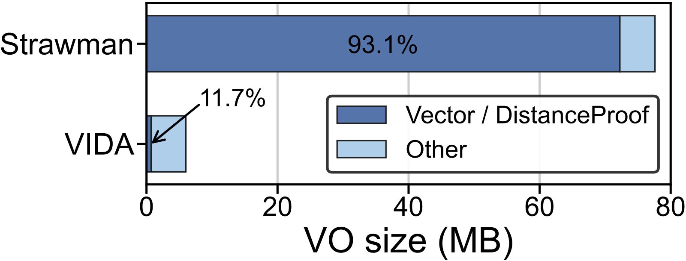
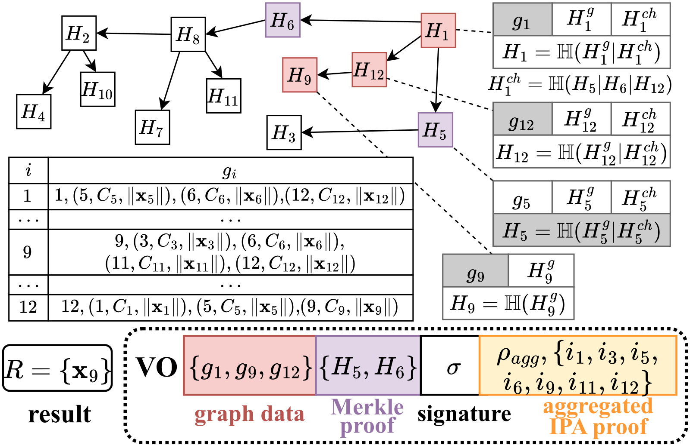
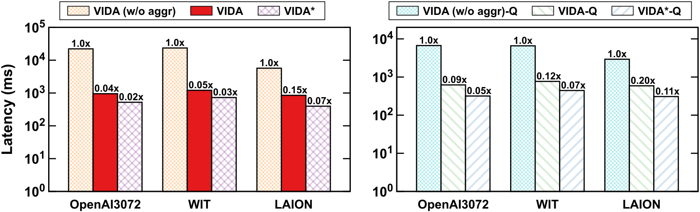
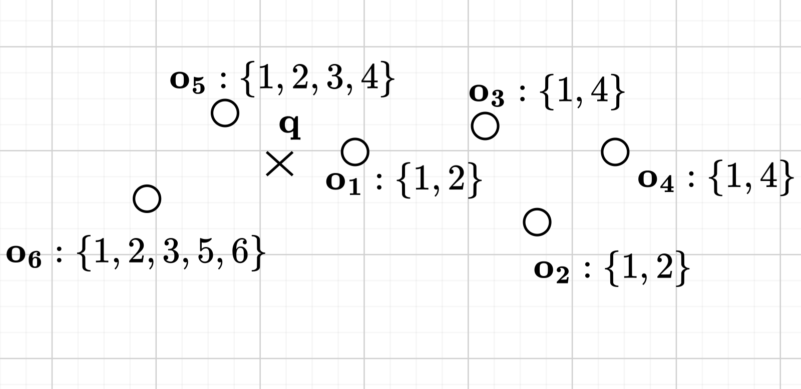
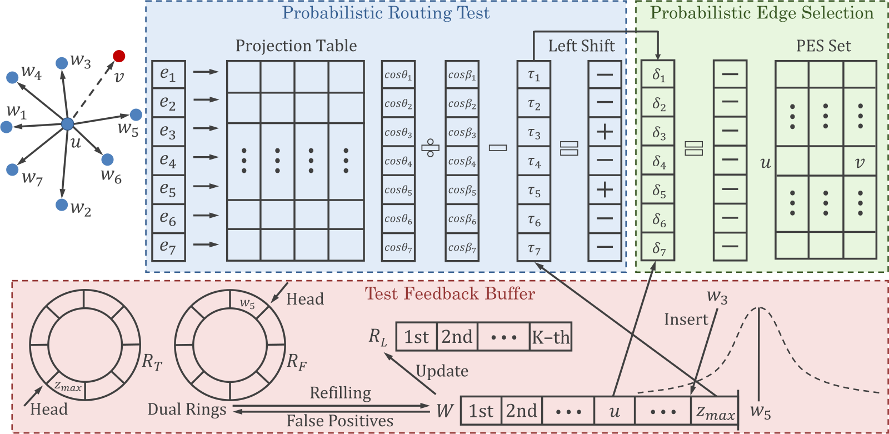
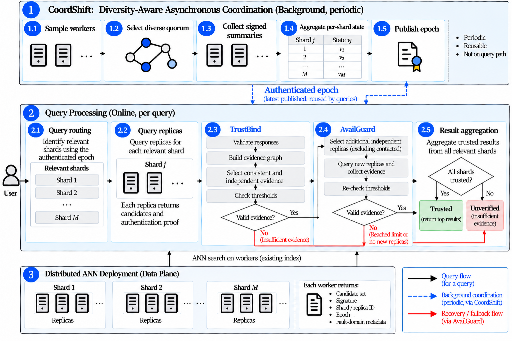
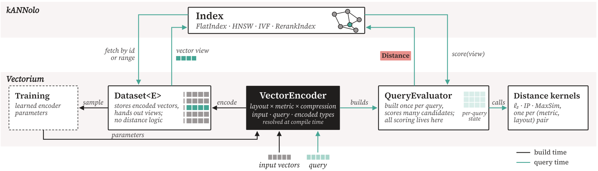
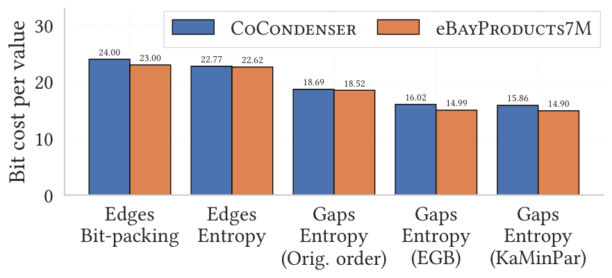
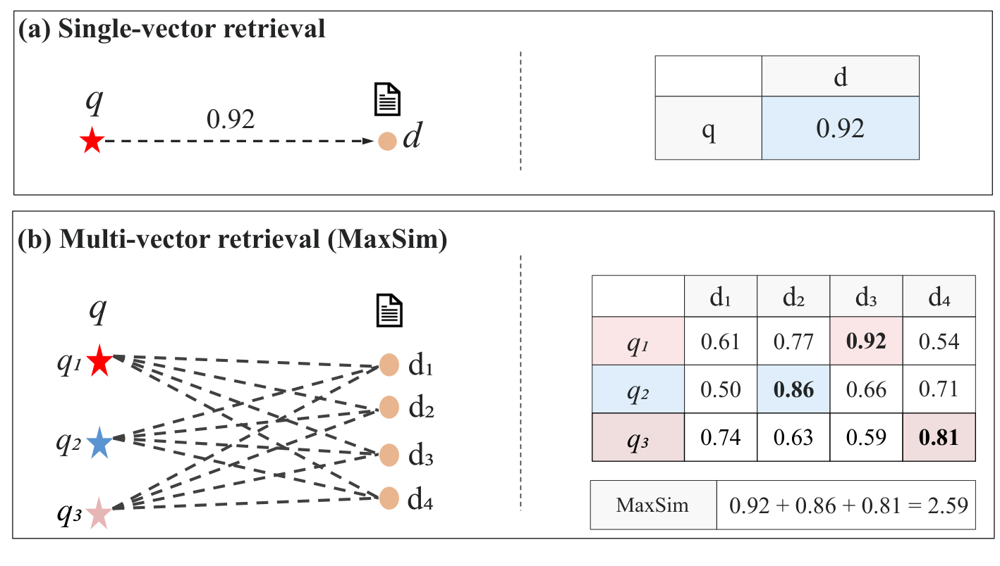

目录 · 8 节
1验证一次搜索，要发多少东西2不发向量，怎么验算距离3让 Merkle 树顺着搜索路径长4走一遍：7 个访问节点，VO 里装什么5搭配量化：剪掉的候选不再精确认证6实验结果7这对做向量检索服务的人意味着什么8局限向量检索外包给云，怎么知道它没偷懒？VIDA 让客户端不收途经节点的原始向量也能验算你的公司把一亿条文本 embedding 和 HNSW 索引交给一家云服务商托管。每次查询，它返回 100 个最近邻。问题是，你没法知道它是不是认真搜完了。它完全可以少走几步，提前停下，返回一份「差不多」的结果，省下自己的算力。
已有的验证办法是让云在结果之外再附一份证明材料，叫验证对象（VO）。客户端拿着它在本地把搜索重放一遍，结果对得上才接受。麻烦在于，这份材料里装着搜索途中访问过的每个节点的原始向量。在 3072 维的 OpenAI3072 数据集上，一次查询的 VO 有 77.61 MB，原始向量占了 93.1%。
这篇论文来自香港浸会大学，研究的是怎么在不收搜索途经节点原始向量的前提下，验证图索引上的近似最近邻（ANN）搜索。现有做法 Strawman 和 ANNProof 用 Merkle 哈希树认证图节点，再把访问过的原始向量全发给客户端重算距离；Merkle 树按节点编号建，和搜索路径没有关系。论文的方案叫 VIDA（基于内积的可验证距离认证），换了三处：途经的节点只发向量的承诺和范数，只有最终结果的原始向量还要发给客户端核对，用 Inner Product Argument（IPA，一种证明「两个向量的内积等于某个值」的密码学协议）认证距离，并把所有节点的证明合成一个；Merkle 树改按图的结构建（MeST），只给真正被展开过的节点出证明；搭配量化时，被下界剪掉的候选不再做精确认证。在 OpenAI3072 最高的召回目标下，VIDA* 的端到端延迟比 ANNProof 快 6.6 倍，传输时间少 99.2%。
客户端要验算的是距离，距离只需要两个范数和一个内积，所以途经节点的原始向量可以换成大小固定的承诺加一个合并证明；代价是数据拥有者建索引的时间约为原来的 5.5 倍。
验证一次搜索，要发多少东西
先说清楚三方各干什么。数据拥有者建好图索引，在它上面再建一个认证数据结构（ADS，最常见的是 Merkle 哈希树），对树根签名，然后整个交给云。云负责查询，并为每个结果生成 VO。客户端拿 VO 验证。云不可信，数据拥有者和客户端诚实。
这里验证的不是「结果是不是真正的前 100 近邻」。ANN 本来就是近似的，精确验证太贵。验证的是执行完整性：云返回的结果，必须和忠实执行同一个确定性搜索算法得到的结果一模一样。
图索引上的搜索是这样走的：从入口节点出发，维护一个按到查询距离排序的优先队列。每次取出最近的候选，把它的邻居都算一遍距离、放进队列。取出的候选比已经找到的 k 个结果都远时停下，这 k 个就是结果。
Strawman 让云把搜索途中算过距离的每个节点打包发来：节点 ID、邻接表、原始向量，再加上这些节点的 Merkle 证明和数据拥有者的签名。客户端先用 Merkle 证明重算树根、核对签名，确认这些节点没被改过；再用这些节点拼出一张子图，在上面重放搜索。重放结果和云给的一致，而且重放途中没有走到子图以外的节点，才算通过。

问题有两个。第一是原始向量太大。召回要求越高，搜索访问的节点越多，要发的向量就越多。第二是 Merkle 树按节点编号排，和搜索路径无关。论文的例子里，搜索一起访问的 v1、v9、v12 在树里只共享树根，顺序编号的 v1、v2、v3 反而共享很深的祖先，证明压缩不起来。

不发向量，怎么验算距离
那客户端到底需要向量里的什么？作者的观察是，欧氏距离、余弦相似度和内积这三种度量，都只依赖三样东西：查询向量的范数、数据向量的范数，以及两者的内积。以欧氏距离为例，距离的平方 = 数据范数的平方 + 查询范数的平方 − 2 × 内积。
查询向量是客户端自己的，范数自己算。数据向量的范数，数据拥有者建 ADS 时就算好、放进去签名。剩下要证明的只有内积。
VIDA 用的是 Pedersen 向量承诺。你可以把它理解成对向量的一个「指纹」：大小固定，与维度无关；云事后没法把它说成另一个向量。数据拥有者为每个向量算好承诺，和范数一起放进 Merkle 树的叶子。查询时，云对每个访问过的节点给出内积和一个 IPA 证明，客户端用承诺和自己的查询向量就能验证这个内积是真的。
每个节点一个 IPA 证明还是太多，高召回的搜索常常要访问上千个节点。所有这些内积有一个共同点：另一边都是同一个查询向量。VIDA 因此用随机线性组合把它们合成一条：从公开的承诺和内积里算出一个随机数 r，把第 i 个向量乘上 r 的 i 次方后加起来，对这个合成向量和查询向量只做一次 IPA。客户端用同样的系数合成承诺和内积，验证这一个证明就行。论文给出了这种合并的安全性证明。 Hoot 说
示意：搜索访问了 v1 和 v5，真实内积分别是 4 和 5。云想作弊，报成 5 和 4。
云报的内积 → 随机数 r → 加权合成 → 一次 IPA 验证
- 云报的内积 → 直接相加如果两条直接相加再验一次，客户端只能核对总和。两处改动正好抵消，总和不变，验证通过。真实 4 + 5 = 9，云报 5 + 4 = 9
- 承诺和云报的内积 → 随机数 rVIDA 把所有承诺和云报的内积一起哈希得到 r，云改一个数，r 就跟着变，没法先看到 r 再挑能抵消的假数。示意 r = 3。v1 的权重 r = 3，v5 的权重 r² = 9
- 承诺 → 合成承诺客户端不用向量，只把两个承诺按 3 和 9 加权合成。IPA 证明的是合成向量和查询向量的内积，这个值由真实向量决定。3 × 4 + 9 × 5 = 57
- 云报的内积 → 合成内积客户端用同样的权重合成云报的两个内积，和 IPA 证明的值对不上，拒绝。3 × 5 + 9 × 4 = 51，不等于 57
- 多个节点 → 一个证明上千个节点也是这样，各乘 r 的不同次方后合成一条，只验一次。想让假数凑出同一个合成值，云得事先猜中 r，论文证明这几乎不可能。

出处
论文 §IV-C 式 (1)（Fiat-Shamir 随机数 r 由承诺和内积哈希得到）、聚合见证向量与 VerifyAggIPA 的合成承诺和合成内积；两个节点的内积和 r 都是示意数字，真实的 r 是一个很大的哈希值让 Merkle 树顺着搜索路径长
剩下的开销在 Merkle 证明上。MeST 的做法是以入口节点为根，在图上建一棵生成树，再按这棵树建 Merkle 树。
建树的规则是先按跳数分层：离入口一跳的节点放第一层，两跳的放第二层，以此类推。一个节点能从上一层的几个节点到达时，选向量距离最近的那个当父节点。为什么不用普通的最小生成树？只看跳数会忽略贪心搜索偏爱近邻这一点；只看距离又可能把树拉得很深，证明路径变长。
每个节点在树里存的内容也改了。节点 v 的记录里放着它所有邻居的 ID、承诺和范数，不放它自己的向量。客户端拿到 v 的记录，就能认证 v 的每个邻居到查询的距离。邻居自己的记录，等它真被展开时再发。
这样就分出了两个集合。被算过距离的节点很多，它们的内积都进那一个合并证明。被取出来展开邻居的节点少得多，只有它们需要 Merkle 证明。
走一遍：7 个访问节点，VO 里装什么
下面用论文图 2(b) 和图 5 的例子，节点编号和集合都来自论文；第三步的向量数字是示意。
第一步，搜索。1-NN 查询从入口 v1 出发。v1 被展开，邻居 v5、v6、v12 被算距离；接着展开 v12，算到 v9；再展开 v9，算到 v3、v11。最近邻是 v9。被算过距离的节点是 v1、v3、v5、v6、v9、v11、v12 共 7 个，被展开的只有 v1、v12、v9 三个。
第二步，Strawman 要发什么。7 个节点的原始向量全部发出，再加 Merkle 证明里的 4 个兄弟哈希 H2、H4、H10、H16。示意：如果是 3072 维、每维 4 字节，一条向量约 12 KB，7 条约 86 KB，而这只是一次只访问 7 个节点的小例子。
第三步，VIDA 怎么算 v1 的距离。客户端拿到 v1 的承诺、范数和云声称的内积。示意：v1 的范数是 3，查询的范数是 2，内积是 4。距离的平方 = 9 + 4 − 2 × 4 = 5，距离约 2.24。只要合并证明通过，这个内积就是真的，客户端全程没见过 v1 的 3072 个数。
第四步，MeST 版 VO 装什么。被展开的 v1、v12、v9 各发一份记录 g1、g12、g9。g1 里有 v5、v6、v12 的承诺和范数，g12 里有 v1、v5、v9 的，g9 里有 v3、v6、v11、v12 的。其余 4 个节点 v3、v5、v6、v11 都在这三份记录里出现过，不用单独证明。Merkle 证明只要两个兄弟哈希 H5、H6，再加签名、7 个内积、一个合并证明，以及结果 v9 的原始向量。
第五步，客户端验证。它用 g9 算出 H9，再用 g12 和 H9 算出 H12，用 g1、H5、H6、H12 算出 H1，最后加上 v1 自己的承诺和范数得到树根，核对签名。它再检查 v9 的原始向量和 v9 的承诺对得上。然后验证合并证明，拿到 7 个距离，在子图上从 v1 重放。重放走到 v9，和云给的结果一致，通过。假如云偷懒，在展开 v12 后就停下、把 v12 报成最近邻。客户端按同样的停止规则重放：队列里的 v9 比 v12 更近，还不能停，必须展开 v9。VO 里要么缺 v9 的记录，要么结果对不上，验证都会失败。

搭配量化：剪掉的候选不再精确认证
做完上面两步，剩下的开销仍随算过精确距离的节点数增长。现代 ANN 系统常用量化减少精确距离计算。论文挑的是 RaBitQ 这类能给出「距离下界」的量化方法：如果一个候选的下界都比当前第 k 名还远，就不再算它的精确距离，也不把它放进队列，所以它不会被展开。
这种剪枝很适合验证。客户端拿到这个候选的量化编码（同样被签名认证），重放到同一步时自己算下界，确认它确实大于当时的阈值，就跟着剪掉，不需要它的精确距离。于是只有没被剪掉的候选进合并证明。
实验结果
实验在六个数据集上做，为了覆盖高维和大规模两头，从 3,072 维的 OpenAI3072（约 100 万条）到 512 维的 LAION（2 亿条）都有。每次取 k = 100，默认带宽 300 Mbps，索引用 HNSW（Msmarco 上换成 NSG（另一种单层图索引），检验方法不依赖 HNSW）。对比的是 Strawman、ANNProof（把 Merkle 树分片，仍发原始向量）和各自的量化版。VIDA* 指聚合 IPA 加 MeST 的完整版。
| 设置（OpenAI3072） | 基线 | VIDA 系列 |
|---|---|---|
| 最高召回，端到端延迟 | ANNProof | VIDA* 快 6.6 倍 |
| 最高召回，传输时间 | ANNProof | VIDA* 少 99.2% |
| k = 400，延迟 | ANNProof 6,109 ms，ANNProof-Q 1,506 ms | VIDA*-Q 519 ms |
| 4G 带宽，延迟 | ANNProof 16.7 s，ANNProof-Q 3.6 s | VIDA 0.63 s，VIDA-Q 0.82 s |
（数字来自论文第 VIII-B 节）
召回目标越高，优势越大。原因是召回越高，HNSW 的搜索参数越大，访问的节点越多，基线要发的向量越多。这说明 VIDA 省下的正是随访问节点数增长的那部分传输。
带宽变化更能说明问题。在 OpenAI3072 上，带宽从 1,000 Mbps 降到 40 Mbps，ANNProof 的延迟涨了 11.7 倍，VIDA 只涨了 1.2 倍。维度从 512 涨到 8,192 时，ANNProof 的延迟涨 8.5 倍，VIDA 涨 3.9 倍。这两组数说明，在测过的范围里，VIDA 对带宽和维度的敏感度比 ANNProof 低得多。

消融拆开了两个优化。VIDA（w/o aggr）和 VIDA 用同一棵 Merkle 树，只差证明合不合并，合并后总延迟平均降了 91.9%，OpenAI3072 上快 23.3 倍。VIDA* 在 VIDA 上加 MeST，总延迟再降 46.0%。这说明合并证明解决了主要瓶颈，MeST 又砍掉了将近一半。
这对做向量检索服务的人意味着什么
如果要给外包的向量检索加验证，先别想着压缩向量，先问客户端重放时到底要什么；VIDA 的答案是认证过的距离。
论文的拆解给了一个检查顺序。先看 VO 里原始向量占多大比例；高维 embedding 上这一项通常最大。再看 Merkle 证明是不是按节点编号建的；如果是，可以参考 MeST：论文实验里，它让总延迟平均再降 46.0%，这里面既有按拓扑重排，也有只给展开节点出证明。量化剪枝能和这套验证配合，前提是用能给出单侧下界的量化方法，客户端才能复核剪枝。
这套方案的代价落在建索引上。相对各自的基线，VIDA 建索引的时间平均是 5.5 倍，ADS 大 116.1%。这是数据拥有者的一次性开销，换来论文主要的高维、高召回设置下更低的查询延迟和传输。负载轻时未必划算：在 OpenAI3072 上 k 为 10 和 25 的低召回设置里，VIDA-Q 反而比 ANNProof-Q 慢。
局限
方案只适用于确定性的图 ANN 算法，客户端要能逐步重放同一个搜索。验证的是执行完整性，不保证结果就是真正的前 k 近邻。
它也不保护隐私。云能看到查询和所有数据，客户端也会拿到结果向量。需要隐藏数据的场景，论文提到的零知识方案代价高得多，例如 zkRAG 每次查询生成证明约 26 秒。
实验用 toxiproxy 在一台服务器上限速模拟网络，延迟数字来自这个环境，没有在真实的跨云部署上测。
读完这篇，你觉得
夜读鸮记下了，谢谢你的反馈。
点一下即可，无需登录；再点一次撤回。只统计匿名次数，不记录你是谁。
相关论文RELATED

Infra · 2026-11-13Dynamic Graph Indexing for Label-Filtered Approximate Nearest Neighbor Search向量召回常常要带过滤条件，比如只在某几个标签或类目下找最近邻。难点在于 HNSW 这类图索引一按标签过滤，大量边被剪掉，符合条件的点彼此连不上，搜索就困在局部。DYLAN 把物品按标签集合排进一棵前缀树，只在部分树节点上建共享的图索引，每个物品只进对数级个索引。查询横跨多个区域时，它借上层祖先节点的图当桥，在区域之间跳。在标签很多的 YTB-Audio 数据集上，对要求包含全部指定标签的查询，召回率 0.95 以上时它比最快的基线快 43.5 倍。拆开看，它比 UNG 少访问 38.6 倍的点，提速来自索引结构让搜索少走路，而不是实现上的小优化。
Retrieval · 2026-03-11Approximate Nearest Neighbor Search for Modern AI: A Projection-Augmented Graph Approach在图索引里加一层随机投影：PAG 先用投影估计邻居能否进入候选集，估计能进的才算精确距离，建图时用同一套统计量补入边。6 个新 embedding 数据集上单线程 QPS 最多是 HNSW 的 5 倍，建索引时间只有 HNSW 的 20% 到 40%，还支持在线插入；但它把向量存成 16 位浮点，对比里混进了这一项。
Infra · 2026-10-28Failure-Resilient and Verifiable Distributed Approximate Nearest-Neighbor Retrieval分布式向量库的副本能保证查得到，却不能保证查到的是真的：被攻破的副本可以返回签名合法、内容被篡改的近邻结果。TrustANN 在路由层之上加一层中间件，对每个分片，从副本回复里贪心挑出一组：数量达到设定下限，两两相似分够高（候选集合重合度加排序一致度），并覆盖设定数量的不同故障域（如可用区）；凑不齐就去找新的独立副本补，仍不够则明确返回未验证。副本在线不等于结果可信。在多节点测试里，被篡改结果被当成可信的比例从 100% 降到 0，正常负载下 p95 延迟只多 9.36%。 Infra · 2026-11-04OctEx: Billion-Scale Vector Search by Precomputed Lattice Neighbor Lists on GPUsGPU 上做高召回的向量检索，图检索慢在一轮等一轮的串行链上，而不是算距离本身。OctEx 把 GPU 显存花在建库时预先算好的近邻列表上。它把数据随机投影成几百份低维副本，每份把空间切成格子，并给每个格子存一张离格子中心最近的向量列表。查询先算出自己在每份副本里落进哪个格子，一步并行读出这些列表拿到候选，再读最好那几个候选各自预存的邻居表，只走固定的几轮。和 GPU 上的标准图检索基线 CAGRA 比，在高召回下，它在一亿条以内的七个数据集上快 2.0 到 46.4 倍。到了十亿条的数据集上，优势缩小到 1.46 到 2.05 倍。用显存换掉查询时的串行等待，是这篇的核心取舍。
Infra · 2026-11-04OctEx: Billion-Scale Vector Search by Precomputed Lattice Neighbor Lists on GPUsGPU 上做高召回的向量检索，图检索慢在一轮等一轮的串行链上，而不是算距离本身。OctEx 把 GPU 显存花在建库时预先算好的近邻列表上。它把数据随机投影成几百份低维副本，每份把空间切成格子，并给每个格子存一张离格子中心最近的向量列表。查询先算出自己在每份副本里落进哪个格子，一步并行读出这些列表拿到候选，再读最好那几个候选各自预存的邻居表，只走固定的几轮。和 GPU 上的标准图检索基线 CAGRA 比，在高召回下，它在一亿条以内的七个数据集上快 2.0 到 46.4 倍。到了十亿条的数据集上，优势缩小到 1.46 到 2.05 倍。用显存换掉查询时的串行等待，是这篇的核心取舍。
Infra · 2026-11-05Modular and Efficient Approximate Nearest Neighbors Search with Vectorium and kANNolo做向量检索时，换一种 embedding 形态或量化方式，往往就得换一个库。现有的 ANN 库要么只支持一种组合，要么每种组合各写一份代码，没有一个 ANN 库在同一套接口下覆盖稠密、稀疏和多向量三种 embedding。作者为此开源了两个 Rust 库：Vectorium 负责存向量、算距离和做量化，kANNolo 在它上面实现 HNSW、IVF 等索引。任意组合都在编译时生成专用代码，所以拆成模块不会拖慢运行速度。它的两段式 HNSW 先在压缩过的向量上找候选，再用更精确的向量重新打分。在稠密数据上要求 99% 的召回率时，它每秒处理的 query 是 HNSW 参考实现的 2.5 到 3.3 倍，索引只有一半大。同时做稠密和稀疏检索的团队值得读，因为它说明了模块化和速度可以兼得，代价放在编译时。
Infra · 2026-10-29Lossless Compression of Proximity Graph Indexes for Efficient Approximate Nearest Neighbors Search向量检索的 HNSW 图索引里，向量本身已经常被量化压小，邻接表里的边反而成了内存大头，但边要在每次查询走图时现场解码，压缩不能拖慢查询。eBay 和比萨大学的这篇工作先离线给节点重新编号，让相邻节点的编号靠近，再用支持 SIMD 的整数压缩器 Stream VByte 现场解码。边存储最多省下 52.7%，延迟几乎不变；在 eBay 线上部署时，边存储最多减少 44.3%，查询延迟没有变差。
Infra · 2026-11-19SIMQ: A Single Graph-based Index for Multi-Vector Query多向量检索把文档表示成一组 token 级向量，再用最大相似度打分，效果好，但算力贵，很难扩到大语料。现有近似方法要么每次查询都要算完整的中心交互矩阵并依赖 GPU 聚类，要么用与数据无关的压缩，召回不稳定，还得反复补偿。一种单图索引把所有 token 向量做数据感知采样聚类，只在簇中心上建一张图，再按 token 做图导航来近似最大相似度，既不用物化交互矩阵，也不依赖 GPU 加速。五个基准上，在接近的召回水平上，数据感知聚类的查询吞吐相当或更高，例如在 SciDocs 上每秒处理 121.6 次查询，高于 k-means 的 105.0 次。该方法已接入蚂蚁集团开源的向量检索库 VSAG，让多向量检索可以主要在 CPU 上扩出去。 Infra · 2026-11-16VecDBLens: An Evaluatology-Based Framework for Vector Database Diagnosis向量库召回不好时，大家第一反应是调索引，但索引能找回的上限是 embedding 定的。作者在 VisualNews 上用 SigLIP2 做精确的暴力搜索，按距离找出的最近图片里，只有 2.04% 是标注里配对的那张。相比之下，HNSW 和 CAGRA 这类图索引几乎能保住精确搜索的全部召回。候选池扩大时，Qwen3-VL 平均还保住 72.3% 的召回，SigLIP2 只剩 33.2%。VecDBLens 的做法是每次只换一个对象，比如 embedding 模型、索引或查询处理，其余数据、负载和参数全部固定，再用方差分析看它们之间怎么相互影响。它还发现索引参数调得太猛会改变邻居结构，带过滤条件的查询召回反而下降。召回上不去时，先查 embedding，很多看似索引的问题出在表示上。
Infra · 2026-11-16VecDBLens: An Evaluatology-Based Framework for Vector Database Diagnosis向量库召回不好时，大家第一反应是调索引，但索引能找回的上限是 embedding 定的。作者在 VisualNews 上用 SigLIP2 做精确的暴力搜索，按距离找出的最近图片里，只有 2.04% 是标注里配对的那张。相比之下，HNSW 和 CAGRA 这类图索引几乎能保住精确搜索的全部召回。候选池扩大时，Qwen3-VL 平均还保住 72.3% 的召回，SigLIP2 只剩 33.2%。VecDBLens 的做法是每次只换一个对象，比如 embedding 模型、索引或查询处理，其余数据、负载和参数全部固定，再用方差分析看它们之间怎么相互影响。它还发现索引参数调得太猛会改变邻居结构，带过滤条件的查询召回反而下降。召回上不去时，先查 embedding，很多看似索引的问题出在表示上。
讨论
欢迎补充实验细节、复现经验或不同看法。需 GitHub 登录。
正在加载讨论…